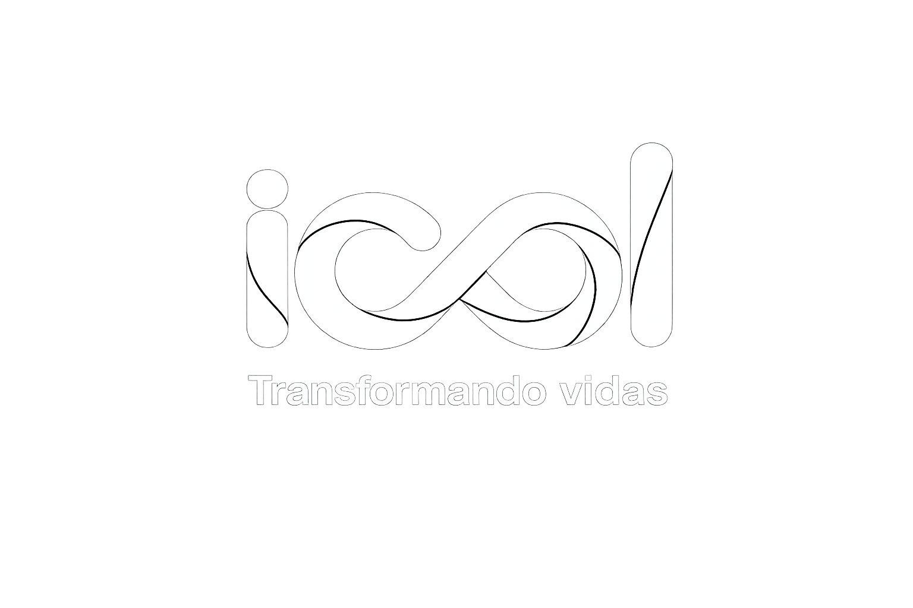
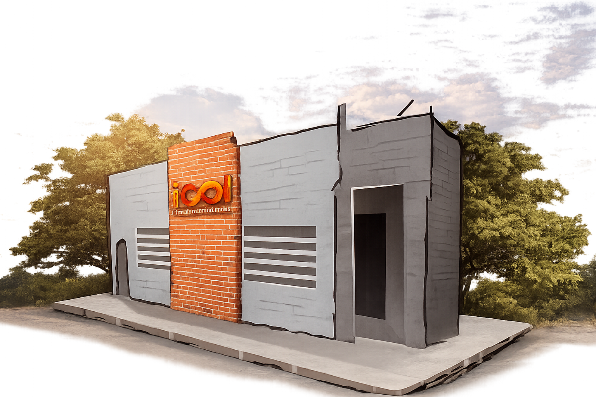
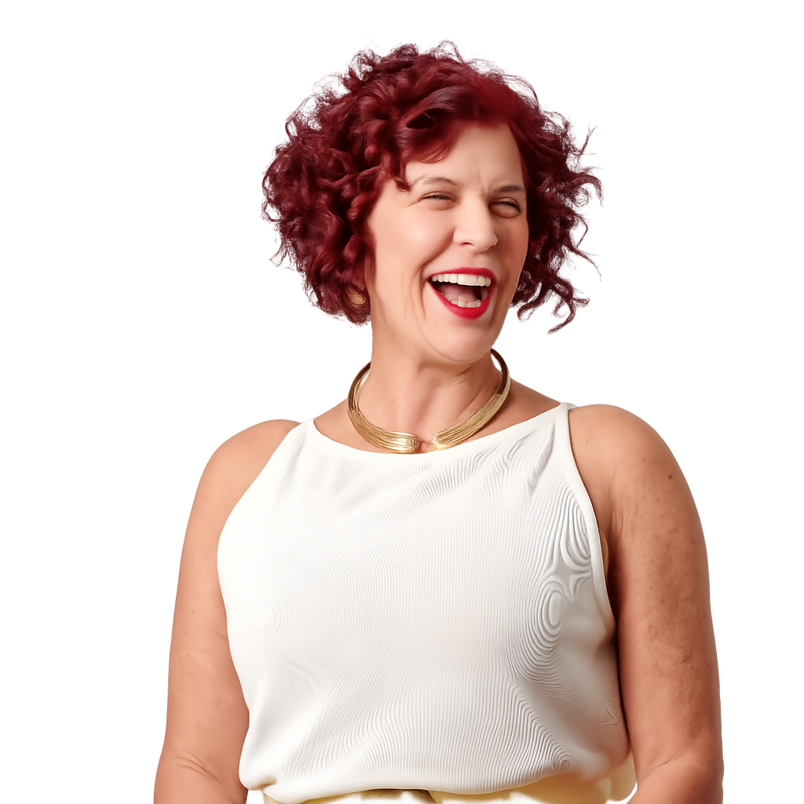

Projeto Aleph
Foco em jovens e estudantes. Apoio escolar, tutoria e criação de rotinas de estudo inteligentes.
Saber maisSomos um instituto voltado ao ensino e atuamos presencialmente na cidade de Franca-SP, e temos como intuito transformar a vida de nossos alunos.

03/06/2026 • 19h às 21h
Revisão prática para alunos da ICOL com foco em editores de texto, planilhas e organização de arquivos.
Junho
03
Início
19h
Vagas limitadas
Inscrições abertas
O prédio onde hoje funciona a ICOL carrega consigo mais do que paredes e salas: ele guarda memórias, afeto e propósito.
Antes de se tornar um espaço dedicado à educação e à transformação social, o local abrigava o consultório do pai da idealizadora Flávia Lancha.
Foi ali, entre atendimentos e histórias de vida, que nasceram os valores de cuidado, escuta e acolhimento. Hoje, esse mesmo espaço continua cumprindo uma missão nobre: transformar vidas por meio da educação, da empatia e do compromisso com o próximo.


A idealizadora Flávia Lancha fundou o instituto após sua experiência como Secretária de Desenvolvimento de Franca, onde acompanhou de perto as dificuldades de quem buscava uma vaga de emprego.
O projeto é mantido com recursos próprios e com a colaboração de voluntários que ajudam a transformar capacitação em oportunidade real.
O nome ICOL também carrega afeto e memória: é uma linda homenagem à sua mãe, Isis Consoni Olivito Lancha.
"Acredito que é através da capacitação que podemos oferecer oportunidade de crescimento para todos."
Descubra a oportunidade ideal para o seu crescimento
Foco em jovens e estudantes. Apoio escolar, tutoria e criação de rotinas de estudo inteligentes.
Saber maisCursos rápidos (máximo de 4 meses) de capacitação profissional voltados para as exigências do mercado de trabalho.
Saber maisAtividades e acolhimento especialmente desenvolvidos para promover o bem-estar do público 50+.
Saber maisDepoimentos de quem encontrou no ICOL um novo caminho.
"O curso me deu segurança para voltar ao mercado e organizar meus estudos."
Mariana S.
"Encontrei acolhimento, orientação e professores que realmente se importam."
Carlos A.
"A ICOL abriu portas para minha família enxergar novas possibilidades."
Helena M.
Notas, frequência, calendário e suporte da plataforma ficam organizados no painel do aluno.